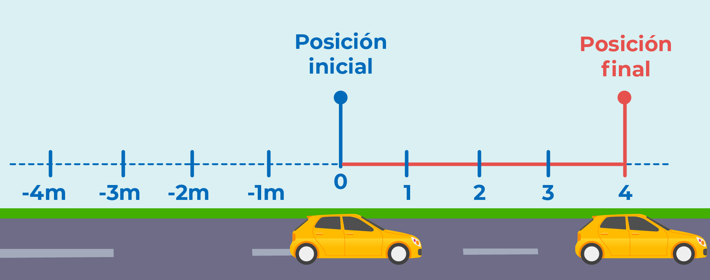
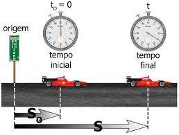
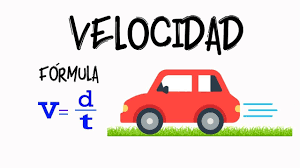
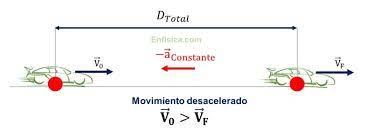
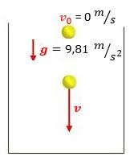
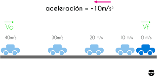

La distancia en MRU se refiere a la longitud total del recorrido de un objeto en movimiento rectilíneo uniforme. En este tipo de movimiento, la distancia es igual al producto de la velocidad constante y el tiempo. La fórmula básica para calcular la distancia en MRU es: distancia = velocidad x tiempo.
El tiempo en MRU es el período durante el cual un objeto se mueve con velocidad constante en una línea recta. Se mide en unidades de tiempo, como segundos, minutos u horas, y es un factor crucial para calcular la distancia recorrida.
La velocidad en MRU se refiere a la magnitud y dirección de movimiento constante de un objeto en línea recta. En MRU, la velocidad no cambia con el tiempo; es constante. Se mide en unidades de distancia por unidad de tiempo, como metros por segundo (m/s) o kilómetros por hora (km/h).
El cálculo de velocidad inicial en MRUV se refiere al proceso de determinar la velocidad con la que un objeto comenzó su movimiento uniformemente variado. Esto se logra utilizando la ecuación de MRUV adecuada, que involucra la velocidad final, la aceleración y el tiempo.
La determinación del tiempo de caída en MRUV se aplica comúnmente al estudio de objetos en caída libre debido a la gravedad. Se refiere al cálculo del tiempo que un objeto tarda en alcanzar el suelo desde una cierta altura, dado su movimiento uniformemente variado.
La aceleración en MRUV se refiere a la tasa de cambio de velocidad de un objeto en movimiento uniformemente variado. En MRUV, la aceleración es constante, lo que significa que la velocidad cambia en una cantidad uniforme en cada unidad de tiempo. Se mide en unidades de aceleración, como metros por segundo al cuadrado (m/s²).
